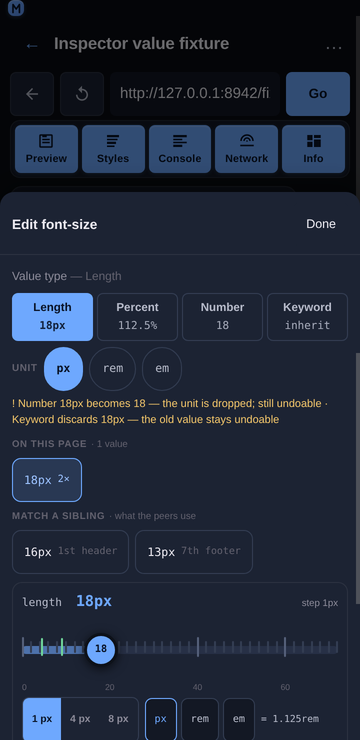

Inspector value types
Overview
A CSS declaration's type is invisible in the panel: 14px, 14, 87.5%, 0.875rem and auto all read as “the value of padding”, yet they are not interchangeable — some are the same value written differently, some discard information, and some cannot be derived without a base size the inspector may not have. The edit sheet therefore carries an explicit value type switch and a unit control next to the value field, and both state their cost before they are tapped.

Usage
Tap any declared style row (or a quick-add chip) in the Styles panel to open the edit sheet, then type or edit the value. Below the Value label:
A property the element does not declare yet opens on its family's neutral value —
0pxfor a length,0for a number,0msfor a time,0degfor an angle — rather than on an empty field, so the type switch, the unit row and the rail are all there from the first tap. A colour, a keyword and a custom property have no neutral form worth inventing (#000000is a choice, not an absence), so those fields stay empty and the page palette or the keyword chips are the input. Nothing is written to the page until Apply, and the seeded value is editable like any other.
Value type — one segment per applicable type with the value it would write underneath:
Length (
16px), Percent (100%), Number (16), Keyword (inherit) for afont-size;Colour and Keyword for a colour;
Time (ms / s) for a duration, Angle (deg / turn / rad) for a rotation.
The type in force is highlighted and shows the current value. Tapping another type rewrites the field — nothing is written to the page until Apply.
Unit — a chip row for the type in force (
px/rem/emfor a length,ms/sfor a time,deg/turn/radfor an angle). Same value, different unit:16px⇄1remwith a 16 px root,180ms⇄0.18s,0.5turn⇄180deg. A unit whose base size is unknown is shown ticked-out (remwith no root size read yet) rather than computed from an assumed 16 px.The warning line — names the cost of the lossy forms:
Number 16px becomes 16 — the unit is dropped; still undoable · Keyword discards 16px — the old value stays undoable. Forms that cannot be derived are listed with the reason instead of offering a guessed number:Percent: a percentage of font-size needs a base size the inspector does not read.Apply — commits the value that is in the field. The switch itself never writes, so a type change is one property and one undo entry, and the element's other declarations are untouched.
Behaviour
Which types are offered is per property, from the property's family plus the suffixes CSS itself uses (
border-top-widthis a length,transition-delayis a time,background-coloris a colour,border-top-left-radiusis a radius). A property that is nobody's shorthand and matches no suffix stays untyped, and its switch is the Keyword form alone —will-change,text-align.A side-suffixed longhand is typed as its shorthand, because that is what the panel actually lists: the CSSOM stores
padding: 10pxaspadding-top/right/bottom/left, so every row in the Declared and Computed lists is a longhand. The family is therefore derived by taking the side segment out —padding-top→padding,margin-inline-start→margin,border-top-left-radius→border-radius(the side is a middle segment there) — and reading the family of the base. Without that step a row's value page offered the Keyword form and nothing else: no Length segment, no unit chips, no numeric stepper, on exactly the sheet the user opens by tapping the property they just changed. A property whose value is a keyword set (display) gets the keyword form only; an unparsable value (url(hero.png),calc(100% - 2px)) gets no invented conversions. The keyword sets are also what the enum view renders, so adding one is how a property gains segments:transition-timing-functionandanimation-timing-functionare listed with the easing keywords (ease,linear,ease-in,ease-out,ease-in-out,step-start,step-end) precisely so those two properties get chips instead of a typed field that would ask forcubic-bezier(0.4, 0, 0.2, 1).0is a length, not a number.padding: 0classifies as a length (a zero length needs no unit) whileline-height: 0stays a number, because that is what the two properties accept.0px⇄0is reported lossless and says “0 needs no unit”.A bare number is not silently a length.
14→14pxkeeps the digits but changes the meaning, so it is offered, flagged not-lossless, and the discarded text is named. Undo restores it.Which conversions are lossless follows CSS, not arithmetic: absolute lengths (
pt,pc,in,cm,mm,q) to px, px ⇄ rem/em when the base is known, px ⇄ % forfont-size(the base is the parent's font size), opacity1⇄100%, times and angles, and colour formats. Decimal noise is rounded to four places, so1radreads57.2958deg.A percentage is refused where it means something else.
padding: 14px → %needs the containing block's width;z-index: 3 → 3%is not a stacking order;flex-grow: 1 → 100%is a different value. Each is disabled with its reason rather than converted.Custom properties are typed by what they hold.
--space-card: 14pxgets the length switch (so a design token is editable as a length), whilevar(--w)used as a value is the custom form and gets no numeric switch.The base font sizes are read from the page, not assumed: root for
rem, the parent element foremand for a font-size percentage. They travel with every pick (buildNodeModel) and with every post-edit read (readElementStyles), so the switch is fully available the moment an element is selected — an earlier version read them only after an edit, which leftPercentandremdisabled exactly when the user wanted them.The
−/+steppers move by the page's own step. When the value index finds a numeric scale for the property being edited (steps of 4px), a nudge moves by 4 and the line under the field says so (Stepping by 4px — this page's own scale · nearest 12px); without a scale the original ±1 behaviour is kept, and a caller that passes its own precision overrides both. See Inspector value suggestions for the snapping arithmetic.
Implementation notes
Pure model:
frontend/src/components/inspector/valueKinds.jsexportsclassify,kindsFor,propertyFamily,alternatives,convert,unitOptions,keywordsFor,formatNumber,percentBase,KIND_LABEL,UNITSand the keyword sets. No DOM, no CDP: a property name, a value string and a{ rootFontSize, parentFontSize, fontSize }context go in; a type, a set of alternatives and a loss report come out.Component: the
ValueTypescomponent infrontend/src/components/inspector/StylesPanel.jsxrenders the segments, the unit row and the warning line, and only appears when there is more than one form to offer or more than one unit to cycle.No new endpoints and no extra round-trip: the base sizes ride on the
Runtime.callFunctionOnreads the panel already makes. The write path is unchanged —style.setProperty(prop, value)on the one property, so the type switch cannot touch anything else on the element.Mobile-first: every segment and unit chip is a ≥44 px target, the value under each label is the value that would be written, and a blocked form is visible-but-disabled (dashed) instead of hidden, so the type is discoverable without being tappable.
Tests:
npm run test:inspectorcovers this withscripts/test-inspector-value-kinds.js(181 assertions): classification for 23 property/value pairs, the easing keyword sets (the five easing names and the two stepped ones for both timing-function properties, the CSS-wide keywords still last, and no easing offered for a property that does not take it), families and suffix heuristics (including the side-suffixed longhands a shorthand expands to, and that the side scan does not invent a family or steal one from a keyword set), the kinds offered per property, lossless conversions (px ⇄ rem/em, px ⇄ % of font-size, ms ⇄ s, deg ⇄ turn ⇄ rad, opacity number ⇄ percent), the refusals (padding px → %, z-index → %, rem with no context), the lossy ones (bare number → px, length → number, anything → keyword) with their discarded text, unit cycling including a missing base, keyword lists, number formatting, custom-property typing, the neutral seed a property with no value starts on (a length as0px, a number as0, a time as0ms, an angle as0deg, and nothing invented for a colour, a keyword or a custom property, with the seeded value offering the unit cycle and the type switch), and the wiring that both style readers report the base sizes and the panel hands them to the sheet.scripts/test-inspector-feature-inventory.jspins the switch's presence.
Related
Inspector Styles panel — tap-to-select, inline editing, matched rules, computed values.
Inspector value suggestions — the values and tokens the page already uses for the property being edited.
Inspector target bar — which element and which rule an edit lands on.